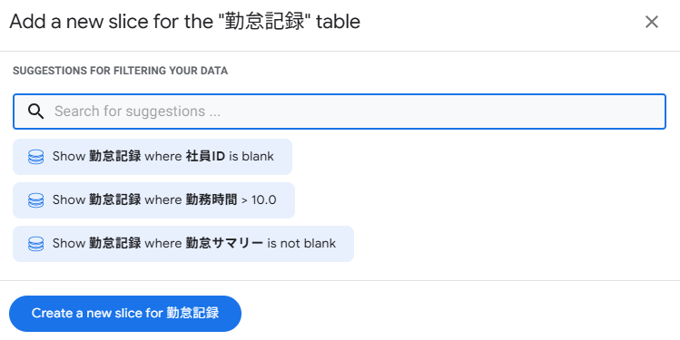
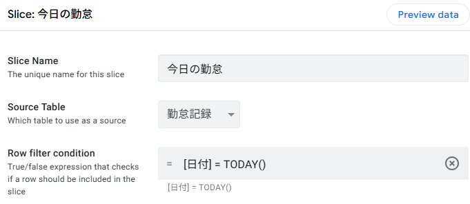
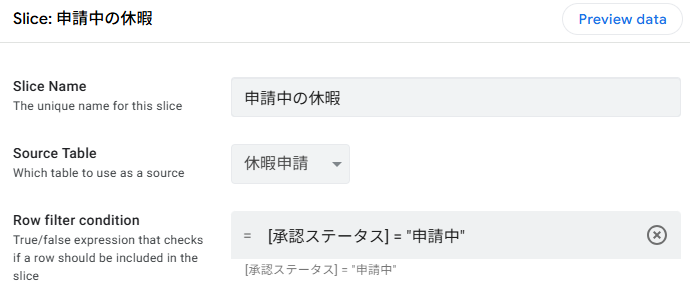
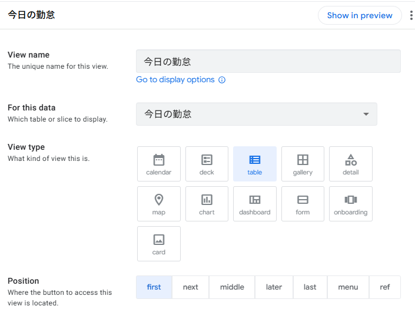

Slice でデータを絞り込もう
4-1 Slice とは？ ─ テーブルの「フィルタ付きコピー」
Slice（スライス） は、既存のテーブルに対して「Row filter condition（行のフィルタ条件）」を設定し、条件に合うデータだけを抽出した仮想的なテーブルを作る機能です。元のテーブルのデータは変更されず、あくまで「見え方」だけが変わります。
■ Slice の仕組み
格納されている
だけを抽出
データを表示
■ この章で作成する Slice
| No. | Slice 名 | 元テーブル | 抽出条件 |
|---|---|---|---|
| 1 | 今日の勤怠 | 勤怠記録 | 日付 = 今日 のレコードだけ表示 |
| 2 | 申請中の休暇 | 休暇申請 | 承認ステータス = 「申請中」のレコードだけ表示 |
4-2 「今日の勤怠」Slice を作成する
勤怠記録テーブルから「今日の日付のレコードだけ」を表示する Slice を作成します。出退勤管理のホーム画面として使うことを想定しています。
■ Slice の作成手順
左メニューの Data アイコンをクリックし、左パネルにテーブル一覧を表示します。
左パネルの 「勤怠記録」テーブル名の横にある「＋」ボタン をクリックします。
※ パネル上部の検索アイコン（🔍）の隣にある「＋」でも同様です。
候補リストが表示されます。目的に合う候補があればそれを選択するか、「Create a new slice」 をクリックします。
Slice の設定画面が開いたら、以下の項目を設定します。
| 項目 | 設定値 |
|---|---|
| Slice Name | 今日の勤怠 |
| Source Table | 勤怠記録（自動で入っている場合はそのまま） |
| Row filter condition | [日付] = TODAY() |
右上の Save をクリックして保存します。


[日付] = TODAY() は「日付カラムの値が今日と等しい行だけを表示する」という意味です。TODAY() は毎日自動的に当日の日付を返すため、日付を手動で変更する必要はありません。
4-3 「申請中の休暇」Slice を作成する
休暇申請テーブルから「承認ステータスが『申請中』のレコードだけ」を表示する Slice を作成します。管理者が未承認の申請を一覧で確認する用途を想定しています。
■ Slice の作成手順
左パネルの 「休暇申請」テーブル名の横にある「＋」ボタン をクリックし、「Create a new slice」 を選択します。
以下の項目を設定します。
| 項目 | 設定値 |
|---|---|
| Slice Name | 申請中の休暇 |
| Source Table | 休暇申請（自動で入っている場合はそのまま） |
| Row filter condition | [承認ステータス] = "申請中" |
右上の Save をクリックして保存します。

[承認ステータス] = "申請中" は完全一致の比較です。第3章で Valid If を LIST("申請中", "承認済み", "差戻し") と設定したため、スプレッドシート上の値も正確に「申請中」と記録されています。Valid If で入力値を統一しておくことで、Slice のフィルタ条件が確実に動作します。
■ 応用 ─ 複数条件の Slice も可能
将来的には、複数の条件を組み合わせた Slice も作成できます。参考として、よく使うフィルタ条件のパターンを紹介します。
| 用途 | Row filter condition |
|---|---|
| 今月の勤怠 | MONTH([日付]) = MONTH(TODAY()) |
| 自分の申請のみ | [社員ID] = USEREMAIL() |
| 承認済みの休暇 | [承認ステータス] = "承認済み" |
| 今日 + 自分 | AND([日付] = TODAY(), [社員ID] = USEREMAIL()) |
USEREMAIL() は、現在ログインしているユーザーのメールアドレスを返す関数です。デプロイ後に複数ユーザーで使う場合、「自分のデータだけを表示する」Slice を作るときに非常に便利です。ただし、プロトタイプ（無料プラン）状態ではアプリ作成者のメールアドレスが常に返されます。
4-4 Slice 用のビューを作成する
作成した Slice をアプリ画面に表示するためのビューを作成します。Slice 自体はデータのフィルタ条件にすぎないため、ビューと紐づけて初めてユーザーに見えるようになります。
■ 「今日の勤怠」ビューの作成
左メニューの App → Views を開き、「+ New View」（または「+」ボタン）をクリックします。
以下の項目を設定します。
| 項目 | 設定値 |
|---|---|
| View name | 今日の勤怠 |
| For this data | 今日の勤怠（← Slice 名を選択） |
| View type | table |
| Position | first |
右上の Save をクリックして保存します。

■ 「申請中の休暇」ビューの作成
同様に Views で 「+ New View」 をクリックします。
以下の項目を設定します。
| 項目 | 設定値 |
|---|---|
| View name | 申請中の休暇 |
| For this data | 申請中の休暇（← Slice 名を選択） |
| View type | deck |
| Position | next |
右上の Save をクリックして保存します。
■ 既存ビューの Position を調整する
第2章で作成した3つのビュー（勤怠記録・休暇申請・社員マスタ）と、今回作成した2つの Slice ビューの Position を設定して、ナビゲーションの構成を整えます。
| ビュー名 | For this data | Position | 役割 |
|---|---|---|---|
| 今日の勤怠（新規） | Slice: 今日の勤怠 | first | ホーム画面（今日のデータのみ） |
| 休暇申請 | 休暇申請 | next | 全休暇申請データ |
| 社員マスタ | 社員マスタ | next | 社員一覧（管理用） |
| 申請中の休暇（新規） | Slice: 申請中の休暇 | next | 未承認の申請一覧 |
| 勤怠記録 | 勤怠記録 | next | 全勤怠データ（履歴用） |
4-5 動作確認とまとめ
Slice とビューの設定が完了しました。プレビュー画面で動作を確認しましょう。
■ 確認チェックリスト
- ナビゲーションに「今日の勤怠」「申請中の休暇」が追加されているか
- 「今日の勤怠」ビューに今日の日付のレコードだけが表示されているか
- 「申請中の休暇」ビューに承認ステータスが「申請中」のレコードだけが表示されているか
- Slice ビュー上でデータを編集すると、元テーブルのビューにも反映されるか
- 「勤怠記録」ビュー（全データ）には全件が表示されているか
■ Before / After
全データが1つの画面に表示され、必要な情報を探すのに時間がかかる
「今日の勤怠」「申請中の休暇」など、目的に応じた画面で必要なデータだけが表示される
■ この章で作成した Slice 一覧
| Slice 名 | 元テーブル | Row filter condition | 用途 |
|---|---|---|---|
| 今日の勤怠 | 勤怠記録 | [日付] = TODAY() |
今日の出退勤一覧 |
| 申請中の休暇 | 休暇申請 | [承認ステータス] = "申請中" |
未承認の申請一覧 |
■ 第4章のまとめ
| No. | やったこと | ポイント |
|---|---|---|
| 1 | Slice の概念を理解 | テーブルの「フィルタ付き仮想テーブル」 |
| 2 | 「今日の勤怠」Slice を作成 | [日付] = TODAY() でフィルタ |
| 3 | 「申請中の休暇」Slice を作成 | [承認ステータス] = "申請中" でフィルタ |
| 4 | Slice 用のビューを作成 | For this data で Slice を選択する点が重要 |
| 5 | ビューの Position を調整 | ナビゲーションの表示順を整理 |